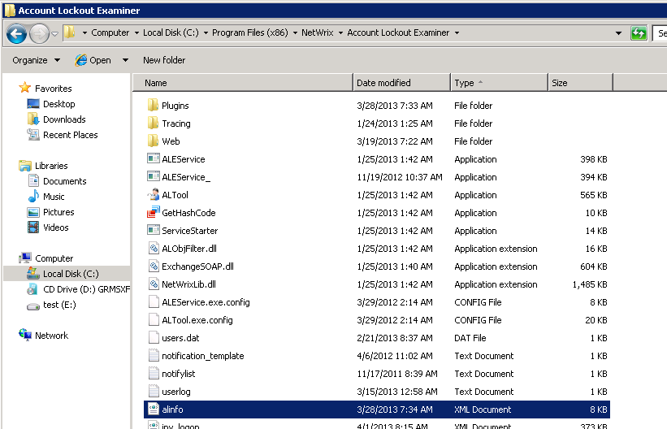
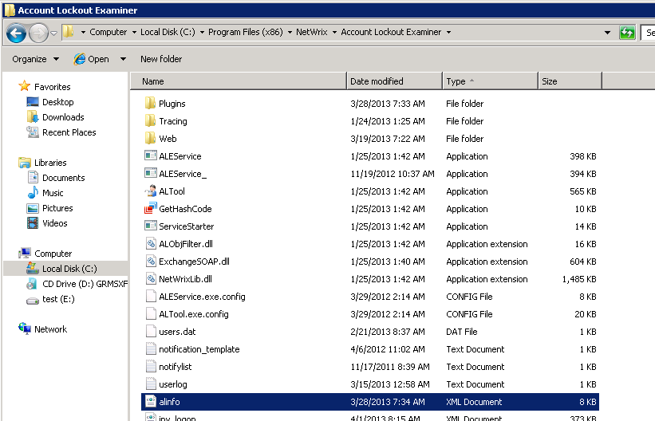

How do I delete old entries from the account list?
You can delete old entries by selecting the accounts from 'All accounts' (multiple selection is supported) and clicking the Remove button.
The account list is stored in the alinfo.xml file and you can manually delete the required accounts directly from the file. To do this, stop the product service, delete the account information (the information is enclosed in the <ALObj> and </ALObj> tags, accounts are referred to as SIDs) and then start the service again.

You can delete old entries by selecting the accounts from 'All accounts' (multiple selection is supported) and clicking the Remove button.
The account list is stored in the alinfo.xml file and you can manually delete the required accounts directly from the file. To do this, stop the product service, delete the account information (the information is enclosed in the <ALObj> and </ALObj> tags, accounts are referred to as SIDs) and then start the service again.
